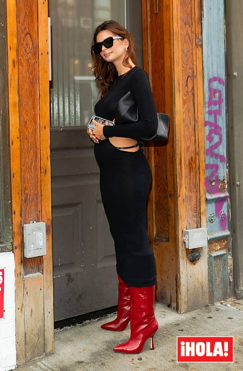
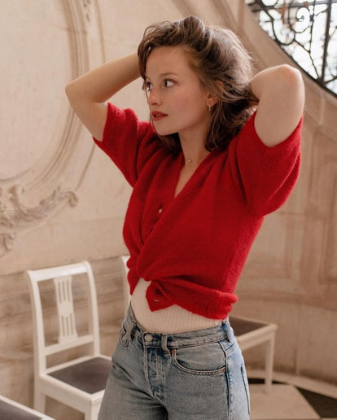

ESTAS SON LAS MEJORES COMPRAS EN MODA QUE PUEDES HACER EN EL BLACK FRIDAY DE EL CORTE INGLÉS
El Black Friday se celebra en todo el mundo el día 27 de noviembre, pero muchas tiendas han querido adelantarse a esta fecha para ofrecer sus mejores descuentos (que en muchos casos también se prolongan hasta el Ciber Monday). Es el caso de Inditex, que ha lanzado una selección de prendas con rebajas de hasta el 55% en Zara, Massimo Dutti y Uterqüe. El Corte Inglés también se anticipa al viernes negro y a partir de las 22h del martes 24 de noviembre lanza sus ofertas más esperadas en la web. Para ponértelo fácil y ayudarte a conseguir el 'shopping perfecto', hemos preparado una selección de prendas y accesorios en los que merece la pena invertir: abrigos, jerséis, sudaderas, botines, bolsos... Recuerda que la clave para hacer buenas compras es invertir en básicos atemporales de calidad que no pasen de moda. ¡Echa un vistazo a la galería! Es el momento perfecto para darse un capricho sin remordimientos y conseguir los regalos de Navidad a buen precio.

LAS NORMAS DE ESTILO PREMAMÁ QUE EMILY RATAJKOWSKY Y OTRAS MODELOS ROMPIERON
Las estrellas de la moda han adaptado su estilo más personal y de tendencia durante la evolución de su embarazo Ya que durante el embarazo, el cuerpo experimenta cambios, las expertas de estilo no dudan en recomendar -o al menos durante este periodo- adaptar el armario a las nuevas siluetas. Sin embargo, si algo ha dejado claro el baby boom de 2020 que ha hecho que algunas de las modelos más famosas del mundo hayan querido ampliar la familia, es que las normas de etiqueta están para romperlas. Un gran ejemplo de ello es Emily Ratajkowski con sus últimos looks. Quien es considerada un icono de moda ha seguido llevando rompedoras combinaciones para presumir de su figura premamá. Y no es la única, otras de sus compañeras de profesión como Romee Strijd o Elsa Hosk también se han rebelado ante el clásico dress code que recomendaría siluetas vaporosas, largos intermedios y anchuras sueltas, las mayores aliadas de la comodidad.
LA GUÍA DEFINITIVA PARA LLEVAR CÁRDIGANS ESTE OTOÑO DE UNA PARISINA EXPERTA
Los cárdigans, la prenda más buscada de las últimas temporadas, son su prenda fetiche. Así que nadie como Camille Yolaine para escribir esta pequeña guía sobre cómo llevarlos este otoño como solo lo haría una parisina experta como ella.
Las ventajas de un cárdigan
“Me encantan porque son muy versátiles. Puedes llevarlos encima de un vestido en primavera-verano cuando hace un poco de frío por la mañana y por la noche, y en otoño-invierno básicamente los uso todos los días, encima de una blusa o simplemente así, sin nada debajo”, desvela. No en balde, su guardarropa está repleto de cárdigans de todos los colores. “Eso vuelve loco a mi novio porque ocupa mucho espacio en el armario, pero no puedo evitarlo. Me encanta lo suave y reconfortante que es el tejido de punto. Me siento segura con un cárdigan”, explica.
Su regla de oro
“Lo más importante es sentirse bien con él: las prendas de punto a veces pueden picar un poco, y no quieres eso”, revela. “Aparte de eso, no sigo ninguna regla. Incluso en las tallas: ¡los cárdigans oversize también quedan bien!”, exclama.
Cómo llevar un cárdigan con vaqueros
“De una manera muy básica, creo. Simplemente con unos vaqueros vintage de corte recto o bootcut, unos botines elegantes, joyas para un toque femenino y, obviamente, un labial vibrante”, explica.